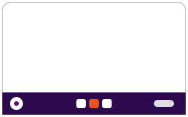
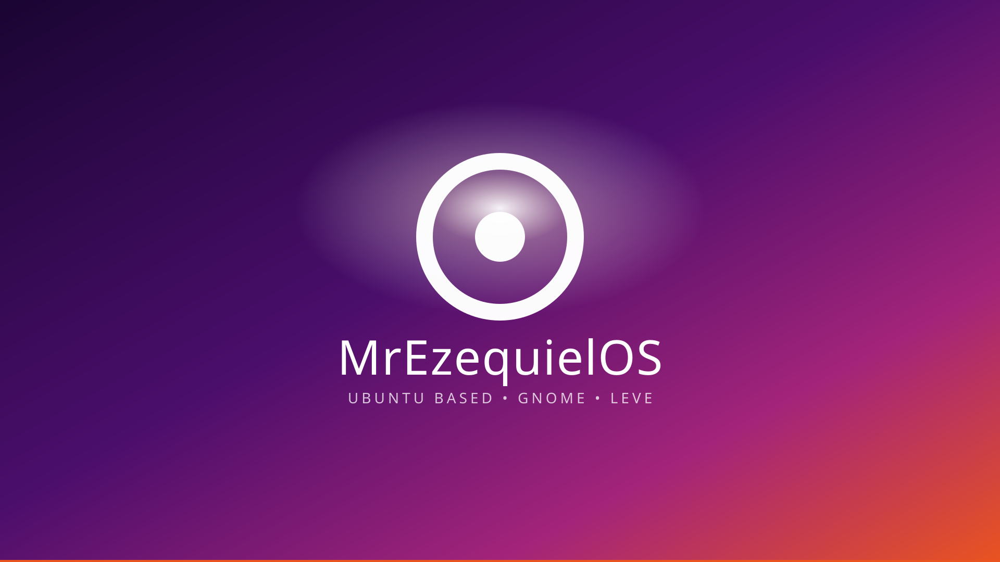
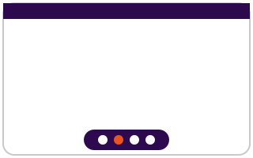
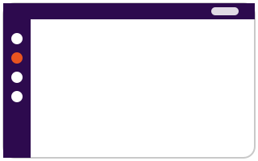

Windows
Barra embaixo com menu iniciar. Vem ativado por padrão.
Taskbar embaixo, menu iniciar com nossa logo, temas oficiais do Zorin e atualização que não apaga nada. Sem snap, sem telemetria.

O app Appearance muda entre Windows, macOS e Ubuntu sem terminal. Estas são as miniaturas reais usadas nele.

Barra embaixo com menu iniciar. Vem ativado por padrão.

Barra em cima e dock embaixo no centro.

Barra lateral esquerda, estilo original.
Nada de snap. Tudo pacote .deb, atualizável pela Loja.
Versões menores chegam pelo app Atualização do Sistema.
A ISO mora nos Artifacts de build do GitHub, então o download pede login grátis lá. Grave com BalenaEtcher, Ventoy ou Rufus em modo DD, boot com Secure Boot desligado e teste o modo live antes de instalar.